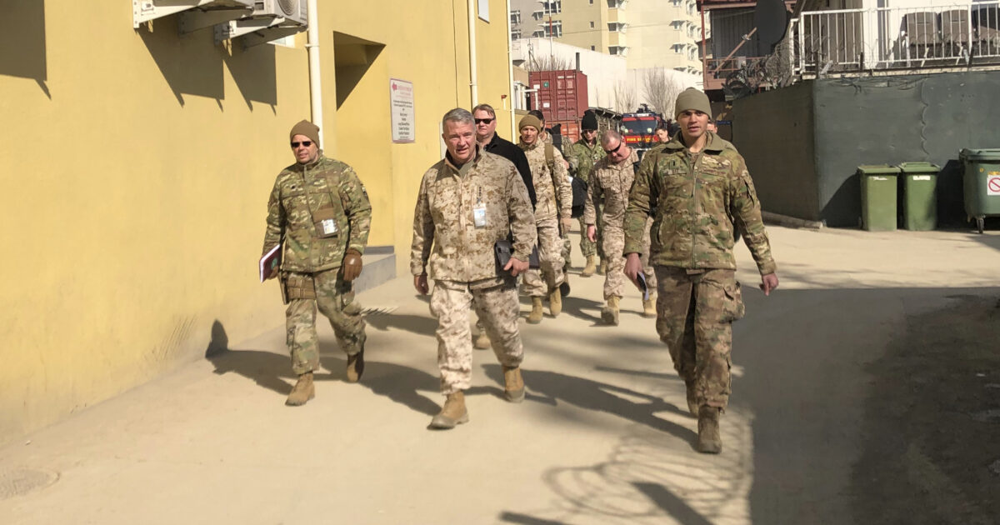
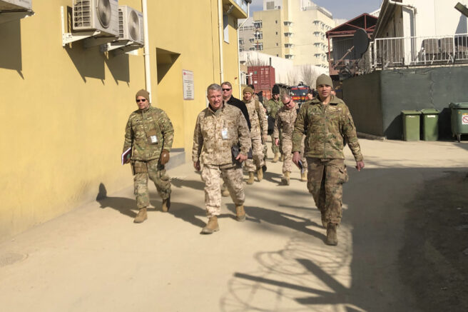

White House: Biden to withdraw 2.5K U.S. troops from Afghanistan by Sept.11
Dumb azz.
Ya never telegraph your military intentions in a combat zone.
Who are these morons?
(Rhetorical question.)
Posted On: 2021-04-13T12:33:00
Posted By: C0NTANG0
Nobody actually believes the plagiarist fraud, anyway.
Posted On: 2021-04-13T12:53:00
Posted By: Kris Kor
Acting Secretary of Defense Christopher Miller announced Tuesday that the US will withdraw thousands more US troops from Afghanistan and Iraq by January 15, 2021 -- just days before President-elect Joe Biden takes office, confirming plans first reported by CNN on Monday.
Posted On: 2021-04-13T13:23:00
Posted By: Trump2020pollsarefake
That would be Trump's plans...libtard
Posted On: 2021-04-13T15:16:00
Posted By: Surly Knott
Democrat collective controlling vegetable Biden finally got something right.Proof that it is mostly a bunch of Democrats running as POTUS.
They have the majority of hands over those RINOs in the collective.Apparently, Lindsey Graham is not in the collective since he's mad about it.
What Trump failed to do in getting America out of Afghanistan and Iraq, the Democrat collective is going to achieve.Trump was duped by Lindsey Graham.
Trump was duped in a lot things.Cost him reelection despite the election steal.Shutting down the economy was his baby.
No other POTUS would have done such a thing.Too huge and negative impact but Trump did it and gave governors that power.What a mess!America changed with that.Now governors can be dictators.
Posted On: 2021-04-13T15:32:00
Posted By: Reno Rivera
Ironic as Obozo/Biden Afghanistan surge in 2009 created the whole fiasco and needlessly doubled our losses.
Posted On: 2021-04-13T15:18:00
Posted By: Surly Knott
Like he'll still be president in September.
Posted On: 2021-04-13T12:28:00
Posted By: teeter
Like he is President now...He's a mindless puppet of Marxist usurpers, of the Constitutional Republic, nothing more.
Posted On: 2021-04-13T14:36:00
Posted By: Frank
He is only the 'resident', the P comes later after he goes to bed...
Posted On: 2021-04-13T14:47:00
Posted By: Trzo9veuha
Cling bitterly my son.
Posted On: 2021-04-13T12:30:00
Posted By: Papa Louie’s 10%
As long as Hillbanger is not the first female president.🤣
Posted On: 2021-04-13T13:04:00
Posted By: @Real_Truth
Why won't he be President in September?
Posted On: 2021-04-13T13:21:00
Posted By: Trump2020pollsarefake
Dementia.
Posted On: 2021-04-13T15:23:00
Posted By: oilman_15106
To hell with Afghanistan.I need those troops to protect me from the Americans I'm screwing over.
Posted On: 2021-04-13T12:53:00
Posted By: Job Killer
Don't forget me Joe.I helped you lie and cheat to get rid of Trump.
Posted On: 2021-04-13T12:56:00
Posted By: Aunt Nancy
Hey it's been fun, but I'm the one we need to be concerned about here.
Posted On: 2021-04-13T12:58:00
Posted By: Job Killer
Another Jan 6th?Just open fire.
Posted On: 2021-04-13T12:55:00
Posted By: IconoclastBob
Troop surge in D.C.
Posted On: 2021-04-13T13:04:00
Posted By: @Real_Truth
Definitely NOT anywhere near the southern 'entrance' to the U.S.
Posted On: 2021-04-13T14:37:00
Posted By: Phoelix
Within a year of receiving the Nobel Peace Prize, obama and Biden killed over 1,000 U.S. Troops in Afghanistan alone.In fact, obama and biden have killed more U.S. Soldiers in Afghanistan during their first year-and-a-half in office than in Bush’s entire eight-year term.Do a web search on Operation Enduring Freedom causalities
Posted On: 2021-04-13T13:07:00
Posted By: Troy Dynes
I'd kill for a peace prize.
Posted On: 2021-04-13T14:45:00
Posted By: Dufus_Drumph
Gee, after all this time I was sure it was Afghans killing Americans.
Posted On: 2021-04-13T14:46:00
Posted By: Dufus_Drumph
God Bless President Trump...Joe is so thankful for getting the draw down in Afghanistan so easy because of President Trumps efforts.President Trump really doesn't care who gets the credit, especially if it's to save Military Lives.We don't need to be there any longer...
Posted On: 2021-04-13T11:44:00
Posted By: Michael G.
President Trump really doesn't care who gets the credit
It's like you have not watched the news in 4 years.Donnie takes credit for EVERYTHING POSSIBLE AT ALL TIMES
Posted On: 2021-04-13T13:22:00
Posted By: Trump2020pollsarefake
You only thought that because the Deaf-Dumb-Blind-Main-Stream-Media was so adamant that he was the problem.Because things were being accomplished and the Media was aghast at his ability.You only thought he was bragging, President Trump was living in your head cause you were proud of your 401k or job prospects.How's President Dud working out for you... he hasn't accomplished anything, just living off President Trumps work and effort... like I said,,, Afghanistan draw down was President Trumps work...
Posted On: 2021-04-13T14:30:00
Posted By: Michael G.
It is time to get out of Afghanistan.We are building roads and schools for people that hate us.It is not in our national interests.— Donald J.Trump (@realDonaldTrump) February 27, 2012
When he left office after four years in charge, the troops were still there.
Posted On: 2021-04-13T14:44:00
Posted By: ken_lov
Don't forget, President Trump brought many troops home and he'd have brought more but the push-back he got from Congress, the Media and you on 'EVERYTHING' he tried.
Posted On: 2021-04-13T15:56:00
Posted By: Michael G.
Trump Republicans are addicted to lying.
July 20, 2019, 8:42 AM AEST / Updated July 20, 2019, 11:45 PM AESTBy Courtney KubeASPEN, Colo.— In June the U.S. military began moving equipment and hundreds of troops back to a military base in Saudi Arabia that the U.S. deserted more than 15 years ago, according to two U.S. officials familiar with the deployment.
And a few months later:
Oct.11, 2019WASHINGTON — The United States is sending about 3,000 additional troops to Saudi Arabia in the latest military response by the Trump administration after it accused Iran of attacks last month on Saudi oil facilities, the Pentagon said on Friday.
Posted On: 2021-04-13T17:28:00
Posted By: ken_lov
Hey look, you're only 42 comments shy of 100,000 Troll!Post, post post!celebrate, you're a living legend in your own mind!
Posted On: 2021-04-13T15:21:00
Posted By: AirSupport
Yes unlike you, I'm not ashamed of my comments history.
Posted On: 2021-04-13T17:33:00
Posted By: ken_lov
LMAO!Unlike me, you have ONLY come to OANN because ALL of the other sites you troll on have eliminated comments sections....You have no other place to go, We all know that!Go give yourself another enema, Troll
Posted On: 2021-04-13T18:26:00
Posted By: AirSupport
Another gibbering child to the blocked list.
Posted On: 2021-04-13T20:10:00
Posted By: ken_lov
Afghanistan -
The Greeks couldn't conquer it.
The British couldn't conquer it.
The Soviets couldn't conquer it.
And now the Americans....
Posted On: 2021-04-13T12:36:00
Posted By: C0NTANG0
Politicians couldn't handle it...our military is fighting with our hands tied behind our backs.
Posted On: 2021-04-13T15:23:00
Posted By: AirSupport
We've had a couple successes, but for the most part, the U.S. is lousy at nation building.
Plus, the Afghanis just like to fight ea.other.
Posted On: 2021-04-14T16:00:00
Posted By: C0NTANG0
Oh, I was just talking about the DESTRUCTIVE ability of our Military!Nation building?LMAO!That's just politics.I just did not think it fair to be lumped in the Trash bin of history of the empires that were humbled by the Afghans!Oh, by the way, US Boots out of Endless foreign wars
Posted On: 2021-04-15T00:00:00
Posted By: AirSupport
We helped create Al Qaeda, trained and armed them.
Posted On: 2021-04-13T12:54:00
Posted By: IconoclastBob
Nonsense.
Carter first got us involved.
See: 'Operation Cyclone'
Posted On: 2021-04-13T13:34:00
Posted By: C0NTANG0
Biden Administration is all Kabuki theater.
Posted On: 2021-04-13T15:21:00
Posted By: oilman_15106
Why 9-11?Impeach Beijing Biden and his communist administration NOW!
Posted On: 2021-04-13T13:03:00
Posted By: honee
Trumpists want the troops to stay so they have something to complain about.
Posted On: 2021-04-13T13:43:00
Posted By: Matt Gaetz
Dope.Trump was the only modern President who did not get us into some useless war.
Posted On: 2021-04-13T15:25:00
Posted By: oilman_15106
An anonymous source told me Joe has called President Trump numerous time for advice...You gots to believe this because I said it came from an Anonymous Source and we all know that's the Gospel.....
Posted On: 2021-04-13T11:46:00
Posted By: Michael G.
He did call once, asking for the password to get the White House TVs to change channels from Fox.
Posted On: 2021-04-13T17:29:00
Posted By: ken_lov
And Ken_lov, that's when the country started to fall apart.Then Joe called again and asked President Trump for help.And that's when Joey's daily phone calls to President Trump started.Now only if Joe would take his advice, we wouldn't have higher gas prices, more stores would have been opened up by now.. you know the U.S.ofA. would be in better shape... Poor Ken_lov and your infatuation with Welfare...
Posted On: 2021-04-13T17:52:00
Posted By: Michael G.
Apparently, the US Military presence there is impeding the biden administrations heroin trade.
Posted On: 2021-04-14T11:00:00
Posted By: HHH


Content Date: 2021-04-13
Download Date: 2021-04-16
Document ID: L0C04A15L